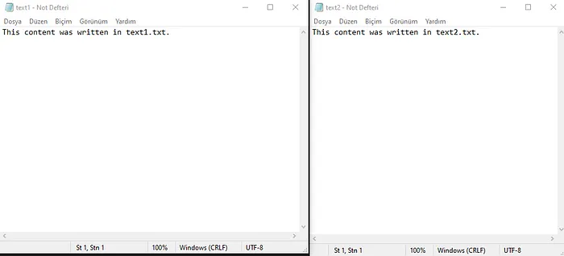
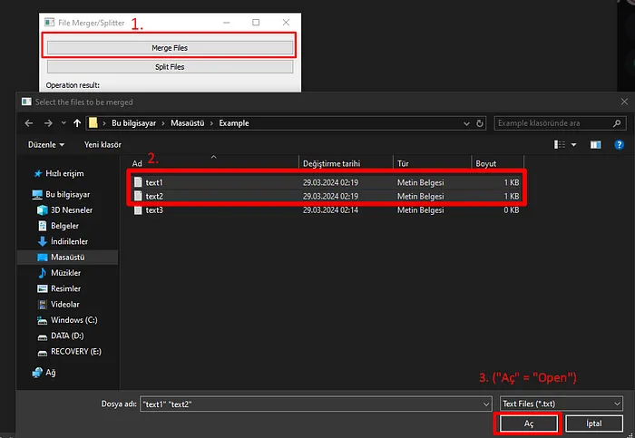

A File Splitter and Merger Application: FileMergerSplitter
Recently, I needed to change an expression used to separate words in approximately 100 text files for a project I’ve been working on (“Eren,Acar” to “Eren Acar” for example). While doing this, it was crucial not to change filenames or rest of content within files.
I found a few simple tools online for merging text files. However after making edits in merged file, I needed to transfer content back to approximately 100 individual files without altering their contents. As far as I researched, there was no such tool available. I decided to develop an application using Python and PyQt5 library for GUI, capable of performing file splitting and merging operations I needed.

My aim was as simple as it can be seen in the screenshot. Regardless of how many files I have, let them all merge into a single text file, and in merged file (according to screenshot, this file is text4.txt), there should be a marker indicating where a file starts and ends (in that, this marker is: name of the file + 50 “-” signs). Then, after necessary edits are made in merged file (text4.txt), it should be transferred back to original text documents without disrupting format.
An Example Usage:
Let’s say we have 3 text files named text1.txt, text2.txt, and text3.txt. Our goal is to merge text1.txt and text2.txt into text3.txt, and then transfer edits made in text3.txt back to text1.txt and text2.txt.
Let’s Define Files:
- Inside text1.txt: “This content was written in text1.txt.”
- Inside text2.txt: “This content was written in text2.txt.” 
2.Merge Files:
Next let’s run FileMergerSplitter.exe and click on “Merge Files” button then select text1.txt and text2.txt.
Then in opened window let’s select file to merge (which in this example is text3.txt).
After that operation a copy of text1.txt and text2.txt is created inside text3.txt.
3.Editing Merged File:
After editing text3.txt as desired, let’s distribute it back to text1 and text2. In this example text3.txt has been edited as follows:
4.Distributing Contents from Merged File:
To distribute texts, let’s click on “Distribute Files” button in program, then select merged file (in this example, text3.txt) then choose location for distributed files (in this example C:\Users\sifre\Desktop\Example):
Files splited:
Now let’s check separated files.
As expected, desired manipulations have been successfully applied to both text files.
Result:
While current version of program only operates with text files, I aim for it to work with .csv and Excel formats in future updates.
If you have any questions or suggestions, please feel free to mention them in the comments and I’d be happy to assist.